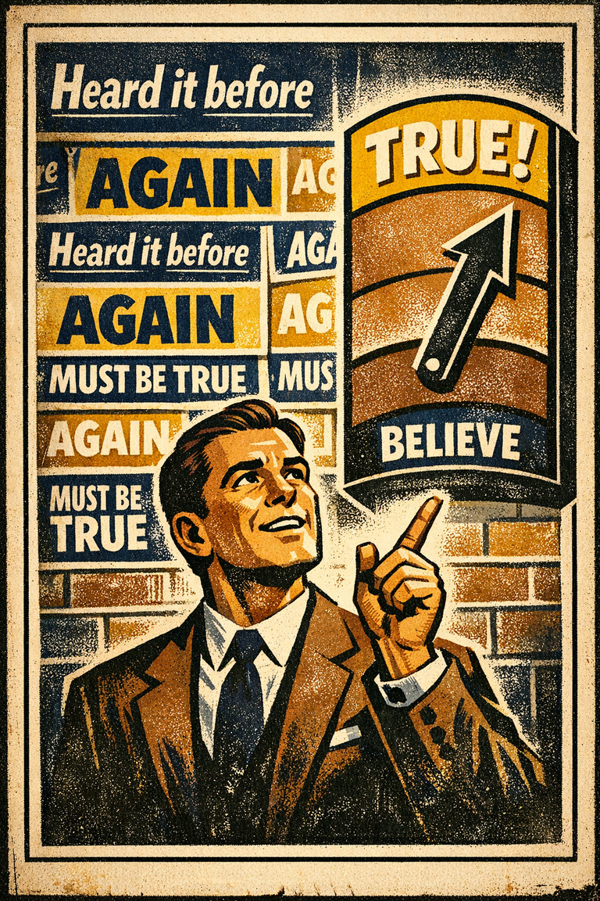

One current headline, thread, or article excerpt with a vivid claim.
Teaching Kit
Media Literacy Bias Lab
A 45-minute lesson for separating vivid stories, repeated claims, and missing denominators before a news item becomes belief.
45-60 minutes
Biases In News Reading
5 biases
Audience
High-school or college classes, media-literacy groups, moderators, and reading groups.
Objectives
- Separate exposure, repetition, and emotional vividness from independent evidence.
- Restore the denominator before treating an anecdote as a trend.
- Practice replacing a corrected story rather than merely negating it.
Materials
Prep these before using the kit live.
A blank denominator table: claim, source, sample, comparison class, missing cases.
The news-reading context hub and one comparison guide.
Agenda
A suggested run of show. Adjust timing to fit the group.
0-8 min
Students write the implied causal story in one sentence before discussion begins.
8-20 min
Small groups identify what is vivid, what is repeated, and what is independently evidenced.
20-35 min
Groups restore the denominator and compare availability against base-rate neglect or survivorship bias.
35-45 min
Each group writes one cleaner version of the claim and one thing they would check before sharing.
Worksheet prompts
- What did the item make easier to imagine, and what did it actually establish?
- Which missing comparison class would most change the interpretation?
- If this story were corrected tomorrow, what replacement explanation would prevent the first story from lingering?
Facilitator notes
- Keep the group from treating bias labels as accusations; the target is the reading process.
- Reward better questions over faster labels.
- Close with one sharing rule the group can reuse.
Linked study tools
These are the supporting pieces to open before or after the live activity.
Biases In News Reading
A domain hub for reading headlines, breaking stories, threads, commentary, and corrections without letting vividness or repetition become evidence.
12 biases
3 paths
2 AI prompts
Is this story changing what I know, or mostly changing what feels available, repeated, tribal, or urgent?
Readers, students, moderators, journalists, teachers, and anyone who wants better media-literacy habits.
Evidence And Explanation
Biases that corrupt sampling, explanation, and the interpretation of evidence before a confident belief hardens.
8 biases
Foundational
50 min
What makes a weak sample or flattering story feel like a strong explanation?
Best for research, diagnostics, policy, media literacy, and analytical work.
Misinformation, Memory, And Crowds
A path for the way repeated claims spread, harden, survive correction, and recruit social uptake long after the original evidence deserved it.
9 biases
Applied
50 min
How do repetition, correction failure, and crowd uptake combine to make weak claims feel increasingly settled?
Best for media literacy, moderation, public reasoning, classrooms, and anyone working in information-rich environments.
Before You Share The Story
A media and discourse check for salience, repetition, and flattering narrative compression.
Foundational
Before sharing a claim
4 min
Question: Is this memorable because it is representative, or because it is dramatic and easy to circulate?
- Ask what denominator or rate is missing from the anecdote.
- Check whether repetition has made the story feel truer than the evidence warrants.
- Look for the missing non-dramatic cases.
- Separate what is vivid from what is prevalent.
Before You Trust The Repeat
A quick information check for claims that feel increasingly true because they are circulating smoothly, not because they have been freshly verified.
Applied
Before treating circulation as proof
4 min
Question: What part of this claim's plausibility is coming from repetition, correction failure, or visible uptake rather than from direct support?
- Trace the claim back to its earliest evidential source rather than its most repeated retelling.
- Ask whether the correction, if one exists, offered a real replacement explanation or only a retraction.
- Separate source count from repetition count and from popularity count.
- Name what would still support the claim if the social circulation signal were hidden.
Availability Heuristic vs Frequency Illusion
Availability mistakes ease of recall for prevalence; frequency illusion makes newly noticed things seem suddenly common.
Quick rule: Ask whether the item is easy to recall because it is vivid, or newly salient because attention has been tuned to it.
Survivorship Bias vs Base Rate Neglect
Survivorship bias samples only visible winners; base-rate neglect ignores the background frequency needed to interpret a case.
Quick rule: Ask whether the missing information is failed cases from the sample or background rates for the whole inference.
Bias pages in this kit
Use these entries as the reference layer after the activity surfaces the problem.

Availability heuristic
The tendency to judge frequency, risk, or importance by how easily examples come to mind.
EstimationAssociationMedia & politicsPersonal decisions

Illusory truth effect
The tendency to believe that a statement is true if it is easier to process, or if it has been stated multiple times, regardless of its actual veracity.
Hypothesis AssessmentAssociation

Continued influence effect
Misinformation continues to influence memory and reasoning about an event, despite the misinformation having been corrected.
RecallInertia

Base-rate neglect
The tendency to underweight general prevalence information when vivid case-specific details are available.
EstimationBaselineResearch & evidenceForecasting & planning

Survivorship bias
The tendency to learn from the visible winners while overlooking the invisible failures that dropped out of view.
Hypothesis AssessmentOutcomeResearch & evidenceForecasting & planning